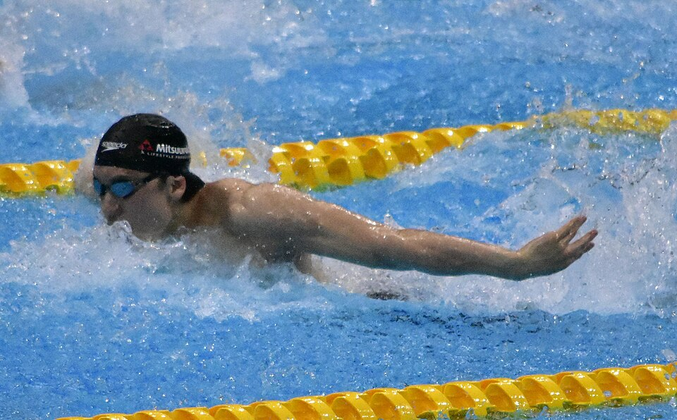

水泳
•
競泳 / 男子200m自由形 / 100mバタフライ
まつもと かつひろ
松元 克央
Katsuhiro Matsumoto
🏢 所属: ミツウロコ
🏅 世界水泳200m自由形 銀メダル🏅 日本記録保持者🏅 愛称『カツオ』
豪快なカツオの如き推進力！日本男子中距離自由形を牽引するトップスイマー
愛知・名古屋2026 今大会最終結果
銀メダル 🥈（男子200m自由形）
決勝タイム: 1分45秒34
第4レーンで中国のライバルと激しいデッドヒートを展開。ラスト50mで驚異の粘りを見せて銀メダルを獲得した。
🎬 最後のシーン（決定的瞬間・ハイライト）
激しい水飛沫の中で隣レーンに迫り、ゴール後に息を弾ませながら健闘を称え合ったハイライト。
▶️ 【YouTube】ラスト50mの猛追撃！タッチの差で銀メダルをもぎ取った力泳 を見る
📊 公式トーナメント表・競技記録速報（Draw/Results）
競泳 予選・決勝公式リザルト速報＆全選手スプリットタイム
📊 【世界水泳連盟 (World Aquatics) / 日本水泳連盟】World Aquatics 公式リザルト を見る ➔
経歴・これまでの歩み
明治大学を経てセントラルスポーツに所属し、現在はミツウロコ所属。2019年光州世界選手権の男子200m自由形で日本新記録を樹立し、同種目日本人初となる銀メダルを獲得。2023年杭州アジア大会でも複数のメダルを獲得し、日本代表の主将格としてチームを牽引し続けている。
主要大会ハイライト戦績
2024年
パリオリンピック
男子200m自由形 8位入賞
2023年
杭州アジア大会
100mバタフライ金メダル / 200m自由形銀メダル
2019年
光州世界選手権
200m自由形 銀メダル（1分45秒22 日本新）
プレイスタイル＆世界を制する武器
186cmの長身を活かしたパワフルなストロークと、レース後半150mを過ぎてからの猛烈なキックによるスパートが最大の武器。バタフライでもアジア王者の実力を誇ります。
専門家・メディアによる客観的分析・批評
✨
強み・世界トップ水準の評価
186cmの恵まれた体格から繰り出される力強いドルフィンキックと、ラスト50mで一気にごぼう抜きする爆発的スパートは日本歴代ナンバーワン中距離自由形スイマーの証。
出典・ソース:
競泳日本代表首脳陣 / スイミングマガジン
⚠️
課題・懸念される客観的事実
過去の大舞台（東京五輪予選など）で見られたように、本番でのメンタルコントロールと前半100mのペース配分のブレがタイムに大きく影響する傾向があります。
出典・ソース:
Number Web水泳担当 / 日刊スポーツ
愛知・名古屋2026への決意とメッセージ
大会スケジュール＆観戦のツボ
🗓️ 出場予定日程・会場
2026年9月21日 200m自由形 / 9月24日 100mバタフライ
👀 観戦の注目ポイント
ラスト50mで隣のコースのライバルたちをごぼう抜きにする豪快なスパート合戦は圧巻。